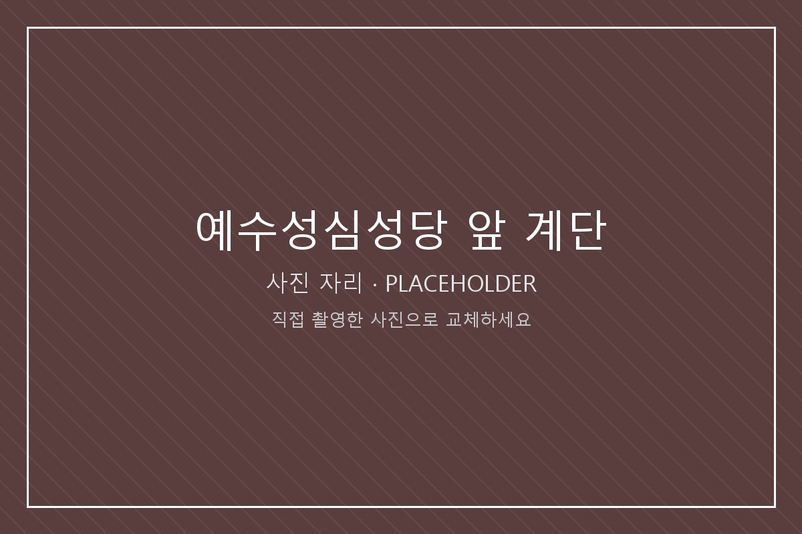

이 장소가 의미 있는 이유
성당 안으로 들어가지 않아도 된다. 나는 대부분 계단에 앉아 있다가 그냥 내려온다. 미사 시간이 아닌 낮에는 사람이 거의 없고, 앉아 있어도 아무도 무엇을 하느냐고 묻지 않는다.
수업 발표를 망친 날 여기 앉아 있었던 기억이 있다. 해결된 것은 없었지만, 건물 사이가 아니라 하늘이 넓게 보이는 자리에 앉으니 그 일이 실제 크기로 줄어들었다.
찾아가는 방법
중앙도서관에서 나와 교정 안쪽 언덕 방향으로 올라가면 벽돌 외벽의 성당 건물이 보인다. 정면 출입구 앞의 넓은 돌계단이 바로 그 자리다. 미사와 전례가 진행 중일 때는 계단을 비워 두고 조용히 지나간다.
여기에서 해볼 것
- 눈을 감고 들리는 소리를 세 가지만 골라 적기
- 계단에 앉아 하늘이 차지하는 면적이 얼마나 되는지 보기
- 성당 외벽의 벽돌 색이 시간에 따라 어떻게 달라지는지 관찰하기
- 오늘 하루 중 가장 마음에 남은 장면 하나를 메모하기
가기 좋은 시간
해가 낮게 드는 늦은 오후가 가장 좋다. 다만 종교 시설이므로 전례 일정과 방문 예절을 먼저 확인하고, 행사 중에는 사진을 찍지 않는다.